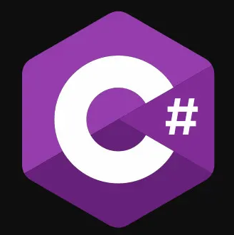
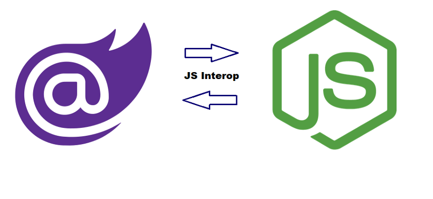
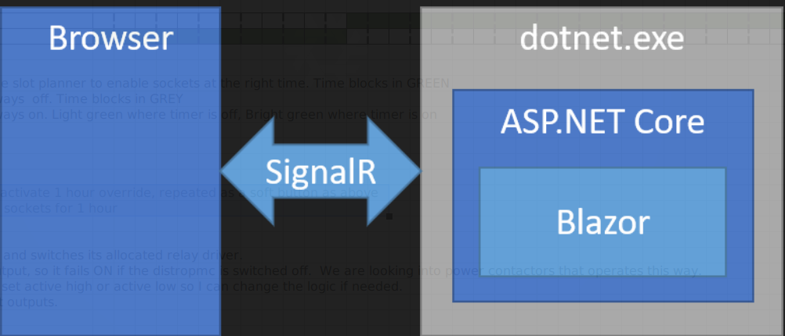

Midi Amotus - Blazor Overview
2021/02/04
Blazor - Qu’est-ce que c’est?


![[Microsoft]](./media/33d78541460aed85afa46d7871bd961762e93d35.png)
Framework gratuit et open-source.
Permet la construction d’interface utilisateur côté client en utilisant C# et fichiers
*.razor(mix html et C#).Une abtraction intéressante sur le rendering du DOM qui permet que celui-ci soit rendu autant côté client que server.
- Va un peu dans le sens des applications web isomorphes.
On va même plus loin en permettant que votre static web app en C# roule completement côté client via compilation Web Assembly.
Premier release: 2018, donc assez récent.
Blazor - Pourquoi?



Permet d’écrire votre code en C# plutôt que Javascript.
On peut donc partager du code entre le frontend et le backend.
Functionne super bien en linux!
Gracieuseté de .NET core.
Très simple à mettre en place et rouler:
$ dotnet new "Blazor Server App" $ dotnet restore && dotnet runInteropérabilité Javascript.
Il est donc possible d’utiliser vos libraries javascript préférées si désiré.
Blazor - Fichiers *.razor & composants

Permet de mixer le code C# et html à même le fichier
*.razor.Le composant est un object C#, pouvant avoir des états, etc.
Il est possible de complètement séparer le code C# pour qu’il soit dans un
*.cs.On utilise alors une petite convention de noms.
Blazor - App.razor

Blazor - Hosting models


Blazor WebAssembly
- WASM .NET runtime téléchargé coté client via
blazor.webassembly.js.
- WASM .NET runtime téléchargé coté client via
Blazor Server
- Côté client plus léger
blazor.server.jsétablit une connection SignalR avec le server. - Support de plus vieux navigateurs (sans support WASM).
- C’est le hosting model que nous avons utilsé.
- Côté client plus léger